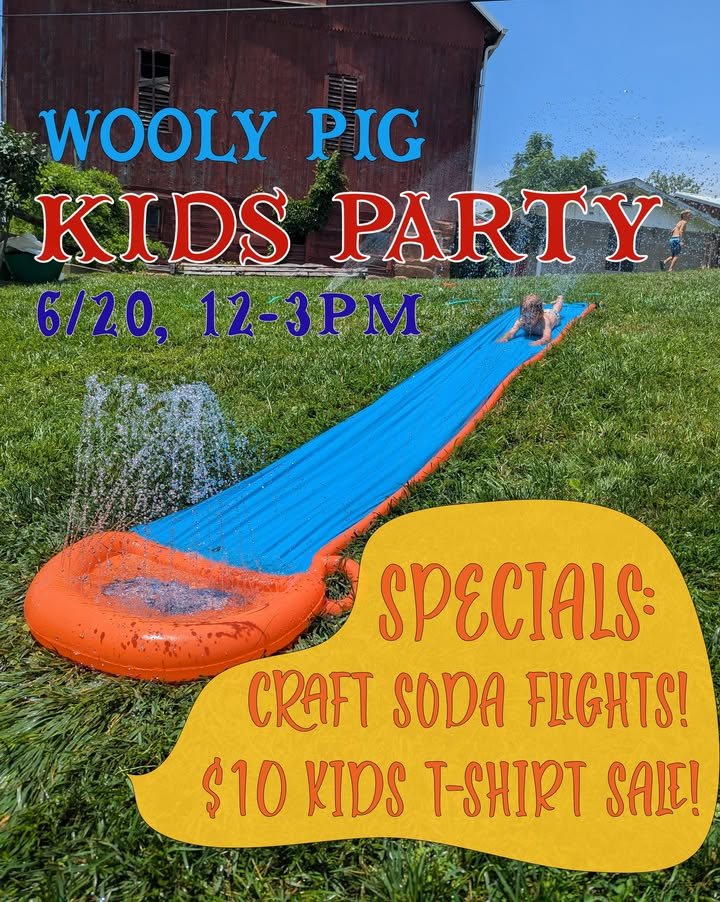
Join us tomorrow for a Family-Friendly party, 12-3pm tomorrow (6/20). Games, water fun, tap room specials, custom temporary tattoos and balloon animals! Visit Coshocton, Ohio! @visitcoshocton
Posts from our Facebook page

Join us tomorrow for a Family-Friendly party, 12-3pm tomorrow (6/20). Games, water fun, tap room specials, custom temporary tattoos and balloon animals! Visit Coshocton, Ohio! @visitcoshocton
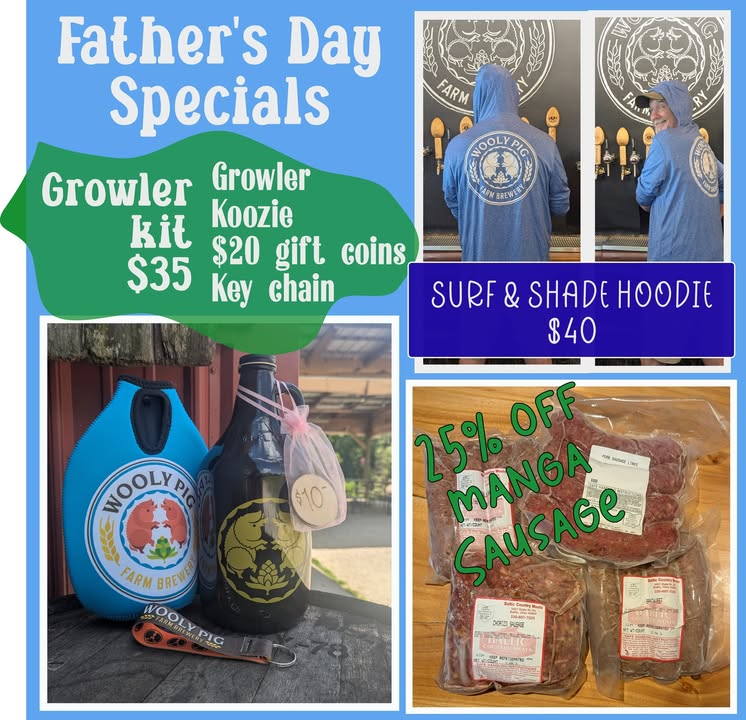
Are you looking for something special for Dad or that Dad-like person in your life? We've got you covered! Starting now, pick up a Growler kit with growler, Koozie, $20 in gift coins and WP key chain for $35. Protect him from the sun with a brand new surf and shade hoodie or get 25% off any and all Wooly Pig sausages. #fathersday #weloveourfatherfigures Visit Coshocton, Ohio! @visitcoshocton Shop Coshocton @shopcoshocton
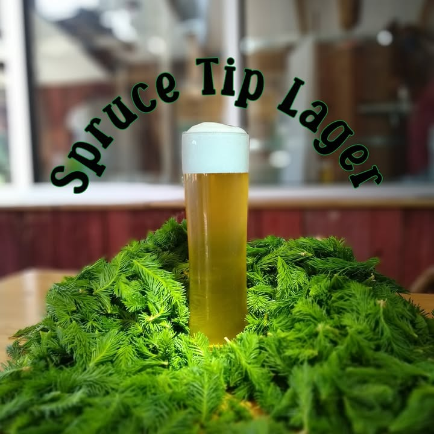
The Spruce Tip Lager makes use of an old alternative for hops: the new spring growth on evergreen trees. Spruce tips were added during boil, whirlpool and during fermentation (dry-spruced!) for a citrusy tingle and a pine-y tang! On tap today! Visit Coshocton, Ohio! @visitcoshocton Ohio Craft Beer @ohiocraftbeer Northeast Ohio Craft Beverage News @neo_craft_brewery_news Cork & Tap Excursions
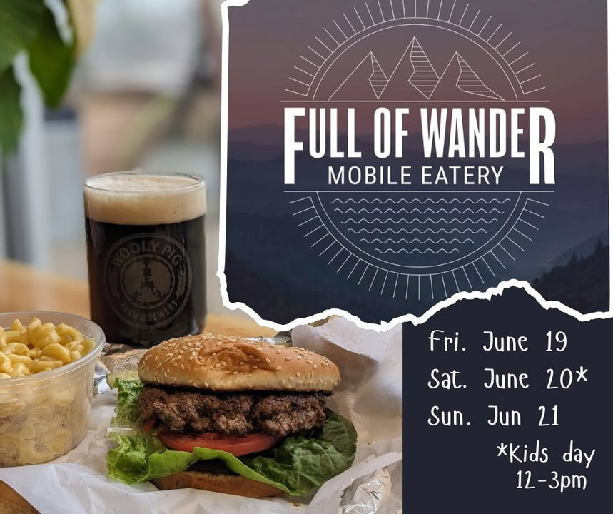
All who wander are not lost...especially if you're wandering to the brewery this weekend for Full of Wander Mobile Eatery! Tasty sandwiches with clever names, June 19-21 (Fri-Sun.) including our Kids Day party on Saturday and Father's Day on Sunday. It's gonna be yummy. Visit Coshocton, Ohio! @visitcoshocton @fullofwanderfoodtruck
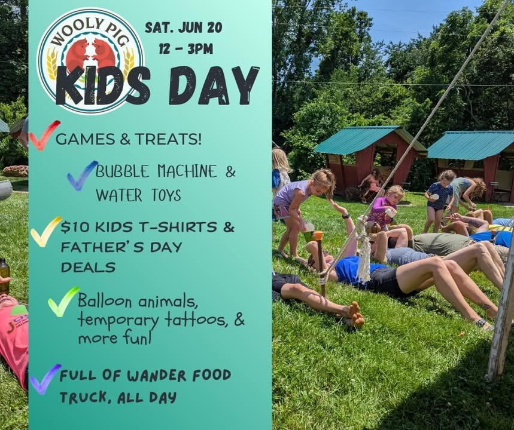
Hot days call for cool plans! Come down to the brewery on Saturday 6/20, 12-3pm, for Kids Day--games, prizes, water fun and more! Heck, bring Dad--it's his weekend, too! Nothing says Father's Day like water balloons in search of a target.... #dadfun #daddeals #iheartdad Visit Coshocton, Ohio! Full of Wander Mobile Eatery @Ohio Craft Beer @visitcoshocton @fullofwanderfoodtruck @ohiocraftbeer
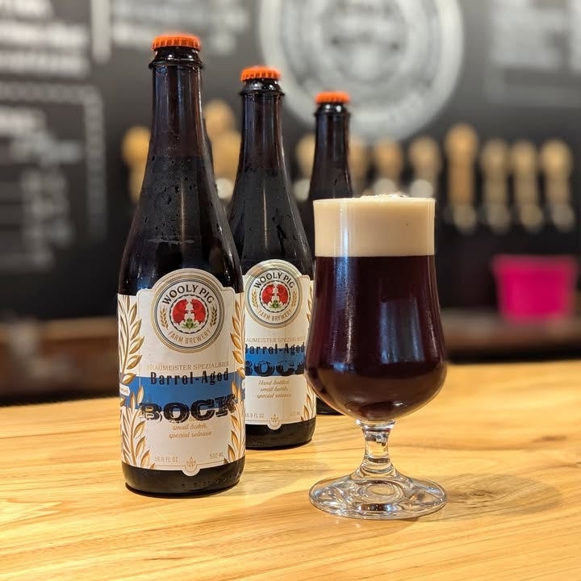
We've got a new barrel-aged beer on tap today! Our Bock had a little time-out in an apple brandy barrel and earned itself some rich oaky bourbon notes and a fruity nose. #balance #illbebock #bockNroll Visit Coshocton, Ohio! @visitcoshocton Ohio Craft Beer @ohiocraftbeer Northeast Ohio Craft Beverage News
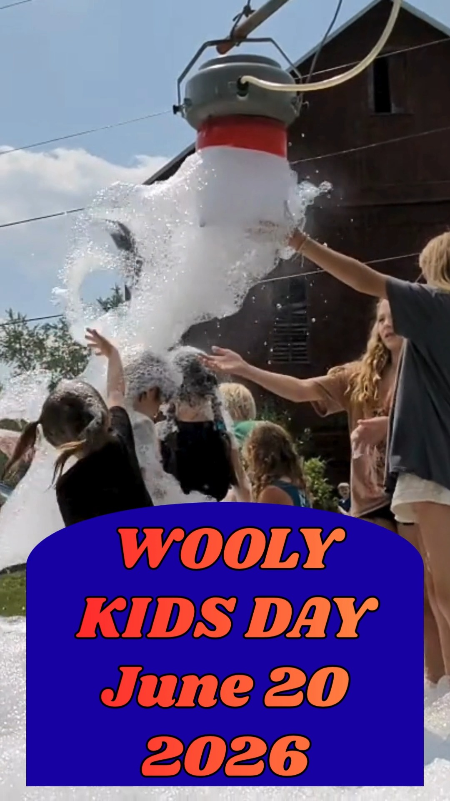
Save the date: Sat. June 20, 2026 is Wooly Kids Day. We'll have games and bubbles and water fun. Stay tuned for more details. Visit Coshocton, Ohio! @visitcoshocton
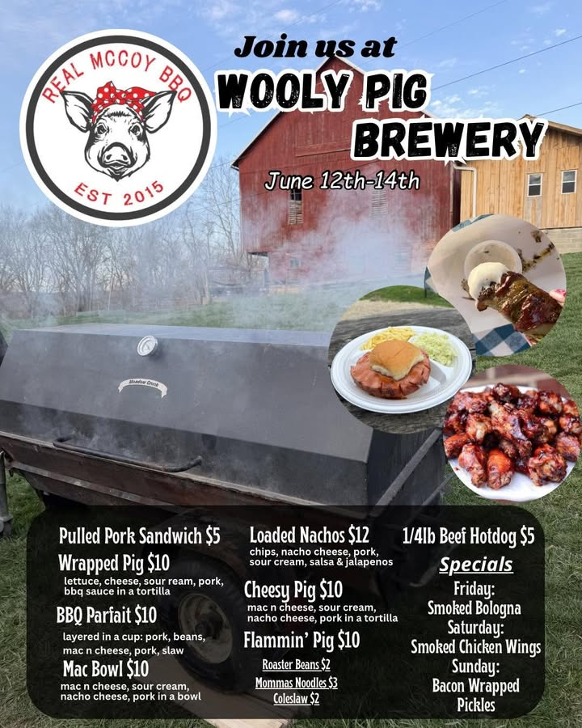
If you're hungry and you know it, clap your hands!! Real McCoy BBQ will be here this weekend with all regular menu items plus daily specials. Grab a beer and a pile of pork! #standingovation #pigatthepig Visit Coshocton, Ohio! @visitcoshocton
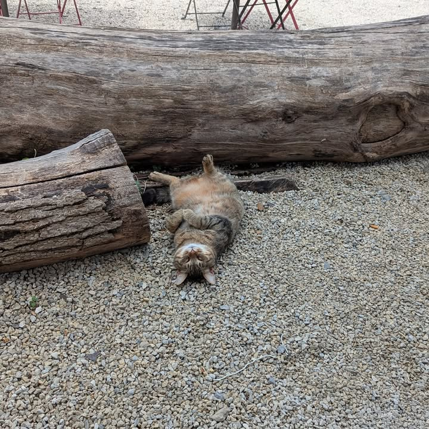
Somebody got overserved this weekend... ...on belly pets. #hardknocklife #brewerycats #dogsarejealous #caniseesomeidplease Visit Coshocton, Ohio! @visitcoshocton @distillerycats
We're co-hosting a special trivia night this week with United Way of Coshocton County. They are gonna curate a couple of quizes, and we're gonna donate 100% of all Helles sold that evening! Join us on Wednesday, June 10th at 7pm for a great night of fun and community. #bestnamewins #drinkbeermadehere #fromtheheart Visit Coshocton, Ohio! @visitcoshocton @coshoctonunitedway
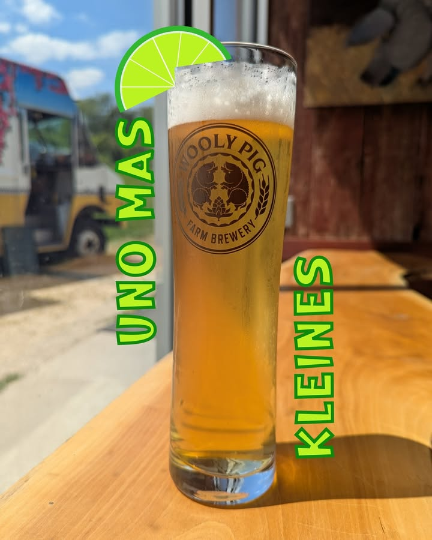
In a surprise appearance, the Uno Mas Kleines lime lager is BACK! If you love a lime beer or are just looking for something refreshing and crisp to enjoy in the sun, give this beer a chance! #krispieboi #onemoreagain Visit Coshocton, Ohio! @visitcoshocton Ohio Craft Beer Northeast Ohio Craft Beverage News @ohiocraftbeer
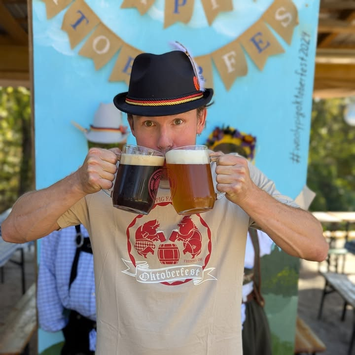
If you see this guy today, make sure to wish him a happy birthday! It's a real big one, and we think he wears his decades very well. The Wooly Pig wouldn't exist without him so I guess we should thank his mom and dad, too!! #happybirthday #bicentennialbaby #happybeerthday
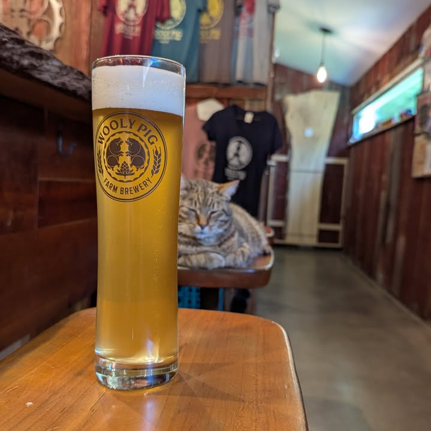
The Classic Gose, a fan favorite, is back. A tart and refreshing wheat beer with hints of salt--this is the gatorade of beers, a perfect accompaniment to warm, sunny day! #brewerycats #sparkly Visit Coshocton, Ohio! @visitcoshocton Ohio Craft Beer @ohiocraftbeer Northeast Ohio Craft Beverage News
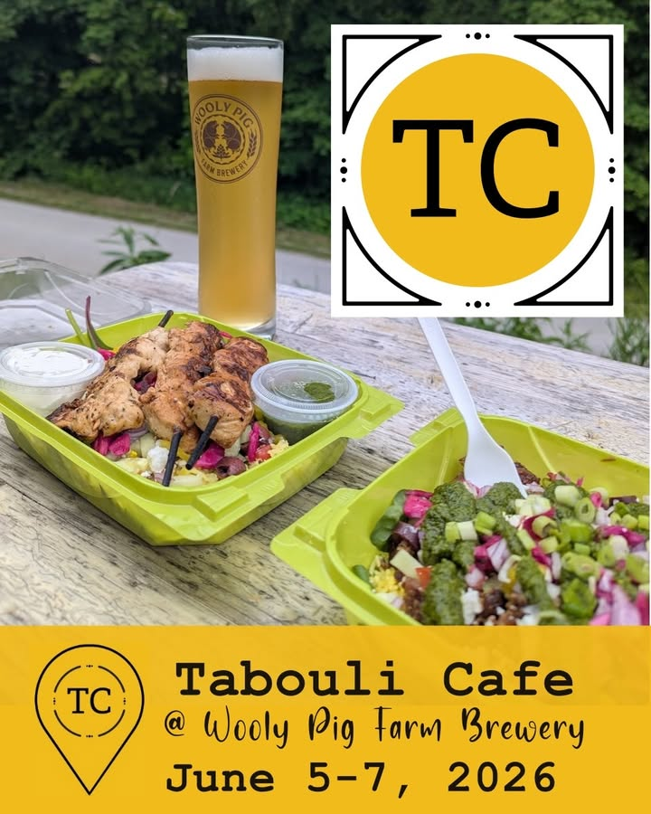
We're already drooling in anticipation of Tabouli Cafe at the brewery this weekend--June 5-7th. Bold Mediterranean flavors made with fresh ingredients! Visit Coshocton, Ohio! @taboulicafe @visitcoshocton

Just back from a whirlwind trip to Athens --and looking forward to the smokin' hot product of our collab with Little Fish Brewing Company - Athens, Ohio . Ohio Brew Week will be here before you know it! #brewersvisitingbrewers Ohio Craft Beer
If you haven't rocked out to the Chardon Polka Band, you haven't had fun! Add a glass of Rustic Helles and the good times never end!
Welcome to Märzen-mania, a collaboration with Edison Brewing Company and the Germania Singing & Sport Society . With a rich, clean malt character, this amber lager is designed bring folks together! On tap today--very limited edition! #nothinglikeagoodbeer #beercollab #beamaniac #ohiobreweries #brewersvisitingbrewers Visit Coshocton, Ohio! Ohio Craft Beer @visitcoshocton @ohiocraftbeer @drinkedison @germaniacbus
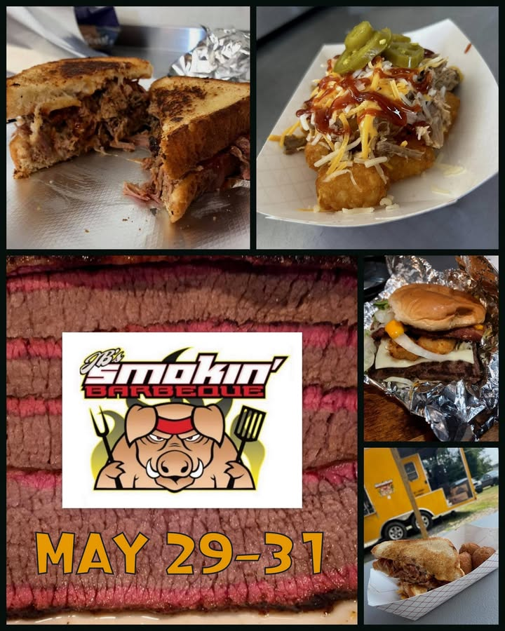
Feeling restless? Needing a little of that pulled pork goodness? JB's Smokin' Barbeque. will be at the brewery this weekend, Fri. May 29-Sun. May 31. I heard the words "smash burger" and "pulled pork grilled cheese" being tossed around.... Visit Coshocton, Ohio! @visitcoshocton @jbs_smokinbbq

The wooly piglets wanted in on the Maypole action last weekend. I don't think they're ready for the big times, yet...

Some of you might have heard Kevin on the radio this week--if not, you can catch up here. Thanks to The Ohio Newsroom for featuring Wooly Pig's sustainability efforts this week! Visit Coshocton, Ohio! Ohio Craft Beer Northeast Ohio Craft Beverage News Cork & Tap Excursions
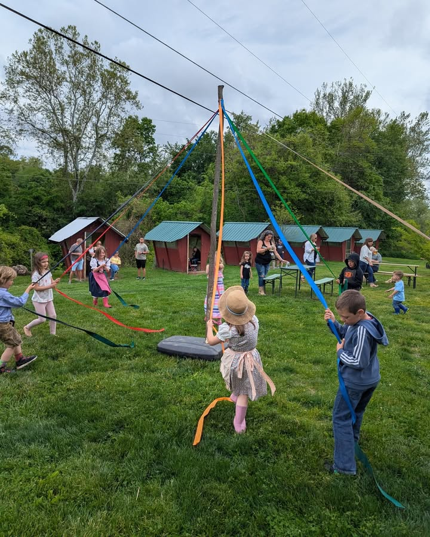
Maifest 2026 was a blast! The weather held off, and we were able to dance the Maypole as planned. We even had a mini version for the littles which was the cutest thing ever. The beer was great, too, but for some reason all the photos include the Maypole.... #roundandroundandroundwego
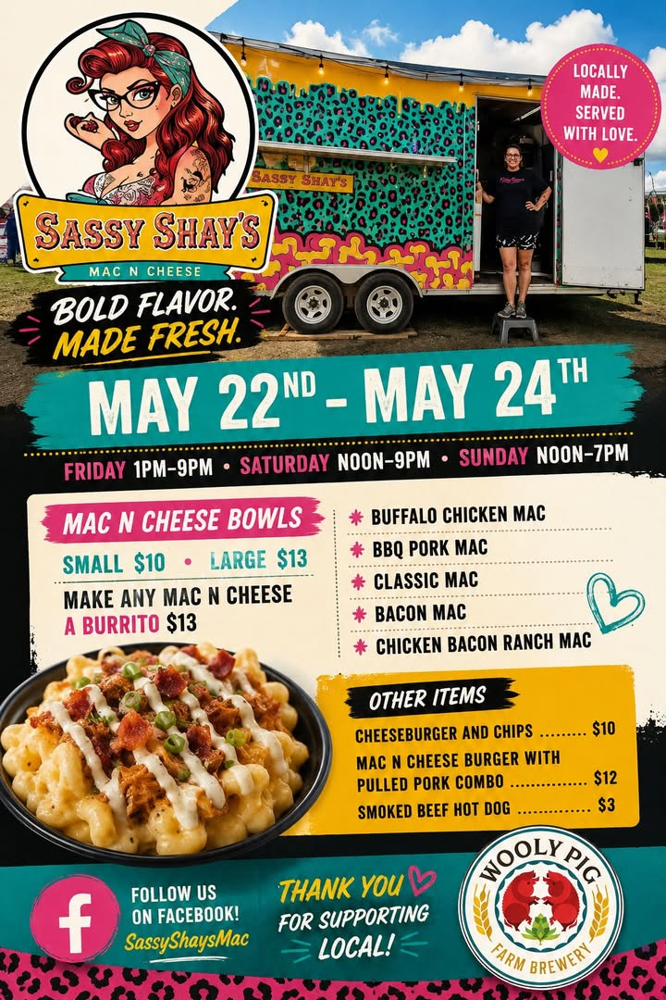
Do you have a busy Memorial Day weekend planned? Take a load off between events with a beer and Sassy Shay’s Twisted Mac N Eatz delicious mac n cheese bowls! Friday - Sunday, May 22-24. #makeitaburrito! Visit Coshocton, Ohio!

Trivia! Tomorrow, 5/20/26, at 7pm. All you mother snugglers are invited! There's gonna be a motherlode of questions, but we ain't spoonfeeding you the answers. #mymomsaidso #yourmom #momlife #bestnamewins Visit Coshocton, Ohio! @visitcoshocton
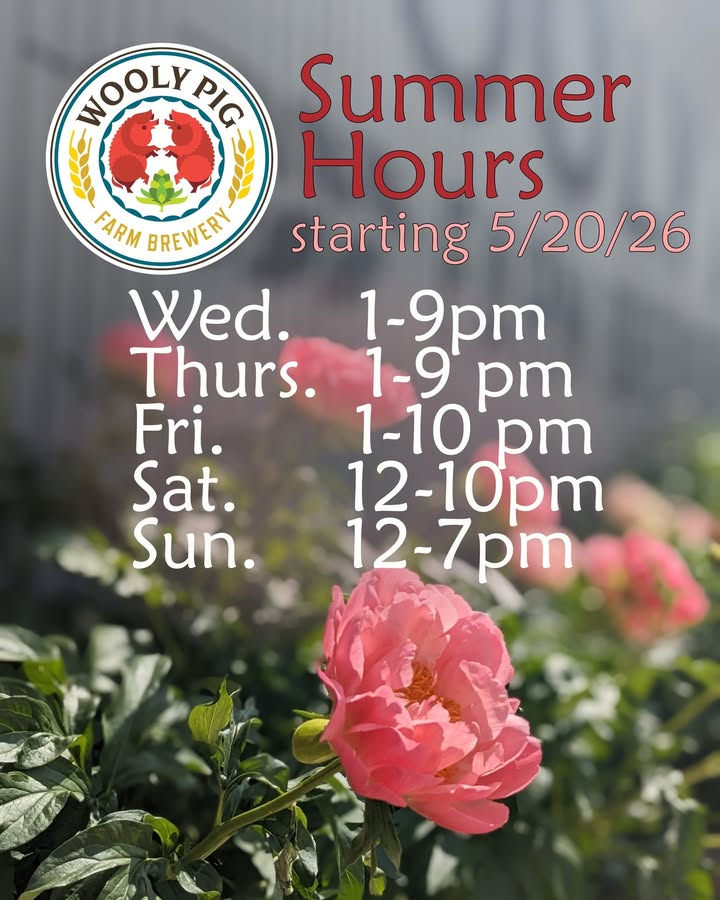
You can feel it in the air today--it's time for Wooly Pig Summer Hours! Starting this week, we will be open: Wed. & Thurs. 1-9pm Fri. 1-10pm Sat. 12-10pm Sun. 12-7pm. Nothing better than a 1pm Keller Pils on a Wed. in June.... Visit Coshocton, Ohio! @visitcoshocton Ohio Craft Beer

Setting up the May Pole!! Join us tomorrow for Maifest! 12:15 tapping the Maibock 2:00 live music 2:30 Maibaum (Maypole) dancing, with audience participation afterwards!

Beer release this Saturday: the Maibock is a "high-octane Helles," a strong golden lager is balanced with a healthy dose of Noble hops-- perfect to celebrate Spring! We'll be tapping it from the holzfass (wooden keg) to open our Maifest festivities. Visit Coshocton, Ohio! Ohio Craft Beer @Northeast Ohio Craft Beverage News @visitcoshocton @ohiocraftbeer @neo_craft_brewery_news
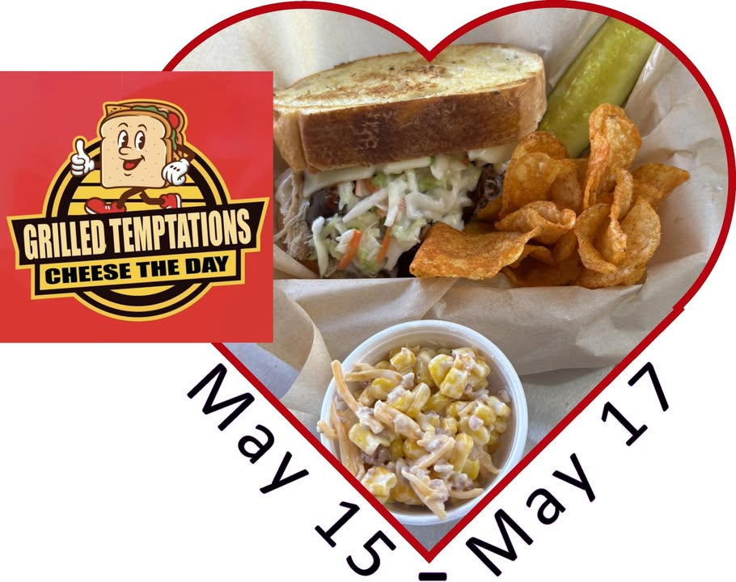
The only thing better than grilled cheese is grilled cheese with lots of delicious extras! Grilled Temptations will be here to help us celebrate Maifest this weekend, Friday 5/15, Saturday 5/16 and Sunda 5/17. #goeswellwith #maibock Visit Coshocton, Ohio! @visitcoshocton
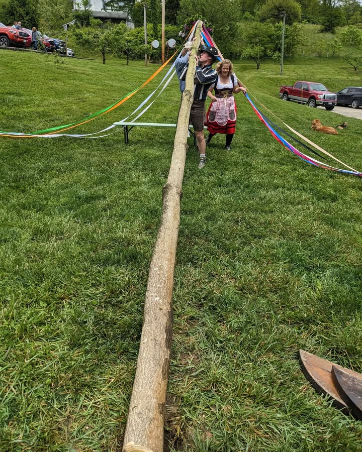
Join us on Saturday, May 16th for Maifest, a celebration of Spring and the tapping of the Maibock--reason enough for us! One of these years, we will even manage to weave all those ribbons down the maypole without making a single error! #probablynot #maypoledance #roundandroundandroundwego Visit Coshocton, Ohio! @visitcoshocton
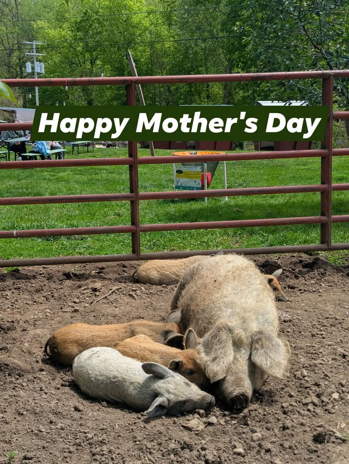
Happy Mother's Day! Celebrate your mothers today at the brewery. See piglets running around the yard begging for treats. Reminisce how terrible you were as a child and how wonderful your mom was. Today only! :) #pizzapigspils

Pigs 'n Pizza. Can't ask for more than that (unless it is also a tall, cold beer). Visit Coshocton, Ohio! @visitcoshocton